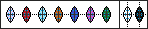

todos os objetos cotalogados pela Fundação-Eclypse.
OBJ-008 | objeto do lago krakos
OBJ-067 | kikoku a espada das almas
OBJ-009
livro do cáos
N1 - este livro foi encontrado em um altar em ruinas no sul de um reino ao norte, algumas paginas estao totalmente ou parcialmente ilegiveis com uma linguagem desconhecida, tal essa que parece ser uam lingua "morta", nossa equipe esta trabalhando duro para traduzir o livro, mas com poucos resultados.
N2 - nossa equipe de tradutores descobriram algums segredos sobre esse livro, ele fala como se abre uma falha no espaço, mas ele se refere a coisas chamadas "VOID" e "LUX", ainda nao sabemos oque é isso exatamente, e tambem fala de uma tal de "filosofia do cáos". traduzir nao tem sido facil ja que nem elfos que tem uma abilidade de tradução altissima conseguem ler esse livro.
OBJ-048
lagrima de Winterfrost
OBJ-102
objetos de origem desconhecida
durante as exploracoes a uma cidade antiga foram achados esses objetos em uma caixa comun sem algum tipo de magia, os objetos mesmo aparentando não serem magicos sao estranhamente parecidos com nucleos, alem de imitarem a cor de varios elementos, apenas 2 dos 9 nao tem cor condizente com os elementos existentes.
cientiastas ainda nao categorizaram os 2 elementos que faltam, mas alguams expecilacoes dizem que devem estar ligados as lendas antigas que mostravam 9 elementos, por alguma razão os mesmos pararam de ter registro depois da primeira guerra santa, na mesma epoca que as linahs ley entraram em cáos.

OBJ-134
skiks
em varias expediçoes de aventureiros de todas as classes estes objetos foram encontrados, assim como o OBJ-102 esses objetos tanbem datam da primeira guerra santa, mas pesquisadores nao acharam nenhuma correlacoes nos objetos, a energia que os objetos emanam é fraca porem desconhecida.
...